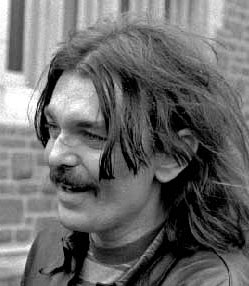
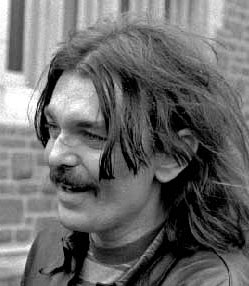
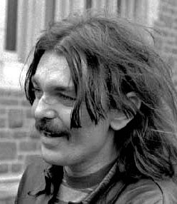

Left : Aldous Huxley. Right : Don Van Vliet. In between them, Umbrella Man in Dealey Plaza
Thursday, June the 2nd, 2005
back to: title, date or indexes
The assassination of an important world figure is so shocking that other events of the day, including other deaths, get overlooked. A notable example is the death of Aldous Huxley on 22nd November 1963. That day, of course, is recalled because of what happened near the grassy knoll in Dealey Plaza in Dallas, Texas. The demise of the astonishingly tall, severely myopic writer went virtually unremarked (as, incidentally, did the fact that only a few weeks before, the vacuum cleaner salesman who knocked on the door of Huxley's Los Angeles home was the young Don Van Vliet, soon to become known to the world as Captain Beefheart. Never let it be said that Hooting Yard is stinting with the facts.)
There was another death that day that received even less attention, despite the fact that the cinema was robbed of one of its most titanic talents. Few today remember Walt Dinsey, overshadowed in death by Kennedy and Huxley, and in posterity by his near-namesake, a weird sociopath given to the production of sentimental pap.
In his centenary year, it is only fitting that we should recall some of Dinsey's greatest triumphs. Over the next few months, our team of film buffs, led by Fatima Gilliblat, will be looking at each of Dinsey's masterpieces in turn. Fatima is currently out of the country… sorry, out in the country, eschewing her usual urban haunts for a summer spent mooching about in some godforsaken abandoned farmyard. She found time, however, to send this brief note:
Hello readers! Fatima Gilliblat here, sprawled on a musty hay bale and thinking about Thomas Hardy, Fate, Destiny, and the grunting of pigs at dawn. But I haven't forgotten my promise to write about the films of Walt Dinsey, and I'm putting the finishing touches to a sprightly little essay on that timeless classic Beauty And the Bees. In my opinion it is the finest killer bee attack film ever made, and I hope to communicate my overenthusiasm to you very, very soon. Heigh ho, green grow the rushes-oh.

Left : Aldous Huxley. Right : Don Van Vliet. In between them, Umbrella Man in Dealey Plaza
Hooting Yard on the Air, June the 15th, 2005 : “The Story of the Lame Dog, the Caged Bird, the Drowned Cat, the Gold Watch, the Whisky Boy and the Insane Boy” (starts around 15:09)